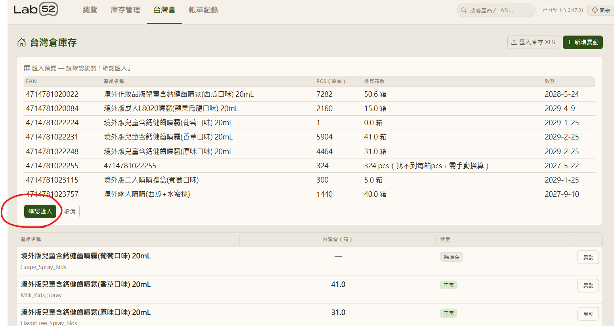
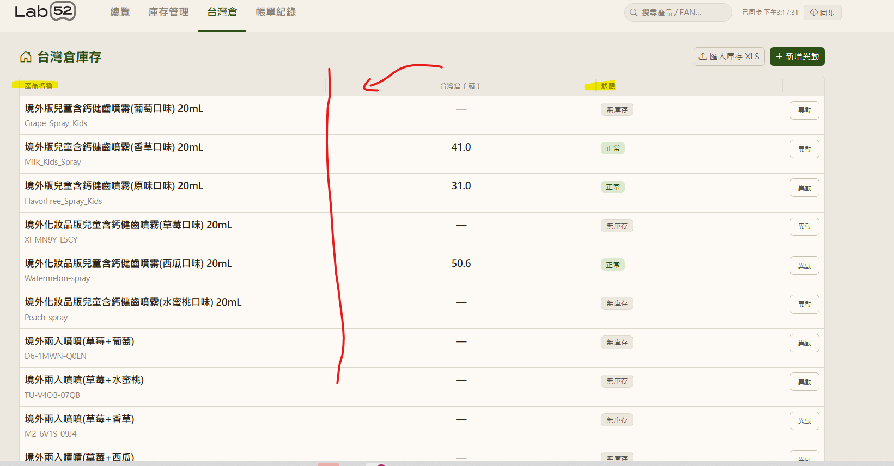
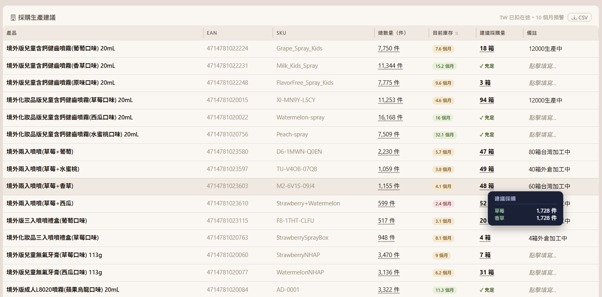
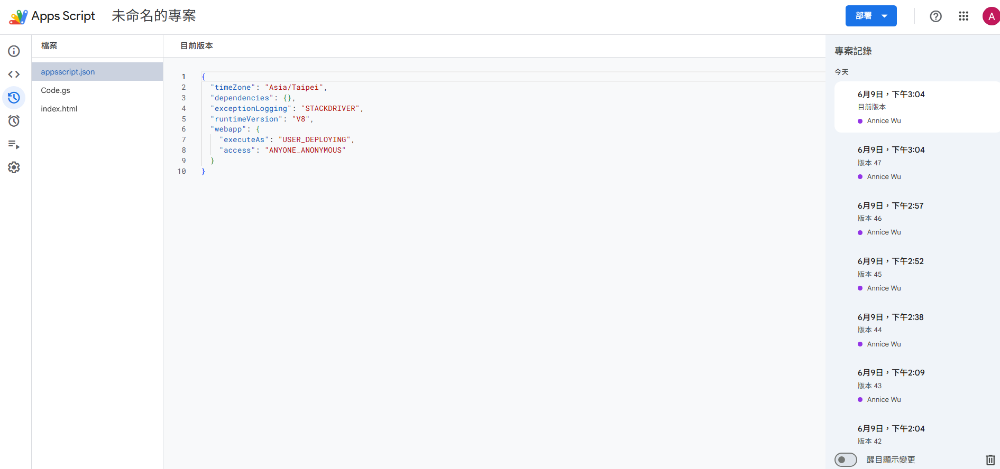

不懂如何寫程式的人
如何在18天做出兩套實用工具
工作上需要整合管理的資訊越來越多，我思考了要如何讓團隊工作流程更順利，也想了解AI的世界有什麼是我能接軌的。於是我開啟Youtube的教學影片下載終端機後，開始寫程式之旅。
我懂業務、懂使用者需求，所以我嘗試提出需求，讓AI 出工程。
以下是這段旅程中，最精簡的過程紀錄。
工作上需要整合管理的資訊越來越多，我思考了要如何讓團隊工作流程更順利，也想了解AI的世界有什麼是我能接軌的。於是我開啟Youtube的教學影片下載終端機後，開始寫程式之旅。
我懂業務、懂使用者需求，所以我嘗試提出需求，讓AI 出工程。
以下是這段旅程中，最精簡的過程紀錄。
因為每天要追蹤數十位 KOC 的合作進度，流程大概有：洽談、寄產品、催腳本、等初稿、審核、確認上線、付尾款。每個 KOC 都在不同進度，截止日一不小心就漏了。所以組員嘗試透過Notion去改變工作流程，但看完後我發現痛點還是無法根本解決...
| 工具 | 問題在哪 |
|---|---|
| Google Sheets | 欄位多、跨分頁找資料、日期要手動算、完全沒有提醒 |
| Notion | 介面好看，但進階功能要付費、無法串 Sheets |
| 市面 KOL 平台 | 定價高、功能過剩、無法客製化我們的業務邏輯 |
「既然我們都知道痛點與需求了，那就讓 AI 負責工程吧我想。」
開發第一天就意識到：用 file:// 直接開 HTML，瀏覽器會封鎖所有外部請求。解法是架本機伺服器，但要叫組員每次開 terminal 輸指令太不現實。
所以我的第一個決定是：不讓她碰任何技術細節。
做了一個批次檔 啟動追蹤表.bat——雙擊它，Node.js 伺服器自動開、瀏覽器自動跳到正確頁面。%~dp0 讓路徑永遠相對於檔案位置，資料夾改名也不會壞掉。這是整個工具的第一個使用者體驗決策：使用者不需要懂技術，才能用這個工具。
最核心的功能：每天開啟 App，系統自動比對所有 KOL 資料，依照業務規則生成當天待辦。定義清楚哪些規則、幾天前觸發，因為 AI 不懂我們的業務流程。
超過 14 天的舊案件自動隱藏、只顯示計數。讓使用者聚焦在今天真正要做的事，不被舊案件淹沒。
執行的過程，我不斷以使用者角度出發，所有操作上的細節都需要注意，必須不斷反覆的思考如何讓使用更便利，這個工具才有意義
例如：點任何一條待辦，右側滑出面板，顯示 KOL 的聯絡方式、Timeline 進度、備注。
還有個有趣的設計：Sidebar 唯讀。 「快速拿到聯絡方式」跟「編輯資料」是兩件不同的事，不應該混在一起。要改資料，去 Paid Collabs 分頁。
IG DM 連結格式是 ig.me/m/username。系統從 handle 自動組成這個連結，點一下就開 DM。這也是我在設計的小巧思，因為和 KOL 溝通最常用的就是 IG。
在初期只是想要更方便管理KOC，但接著發現那何不把社群的會碰到的資訊都搬上來呢？每個月都有貼文排程，可以新增客製化的行事曆讓使用者更好追蹤記錄
Posts 分頁有月曆視圖，我也注意到：把美國的假日和重要節慶標出來。 因為美國假日影響受眾活躍度，排程的時候要考慮。
只需要下需求，AI 就實作了浮動假日的算法，感恩節（11月第四個週四）、母親節（5月第二個週日）這種，是用算的，不是硬寫日期。我沒要求它怎麼算，交給它自己判斷了。
每個貼文格有一個色點代表狀態。點一下，狀態自動循環切換並即時回寫 Sheets。不用打開 Modal，不用找下拉選單。因為「我只是想標記這篇排程了，不想做其他事。」
「範本變數橘色高亮」 — DM 外發範本裡的 [Name]、[product] 在預覽時自動橘色顯示，提醒記得替換。不然複製貼上發出去才發現沒改到 [Name]，超尷尬。
「今日已處理不寫回 Sheets」 — 勾選「今天已催腳本了」只存在瀏覽器本機。因為「我今天發了訊息」不是 KOL 狀態的改變，隔天 KOL 沒交稿，提醒還是要出現。每個人有自己的本機記錄，不影響其他人視圖。
「自製日曆選擇器」 — 原生的 input[type=date] 跨瀏覽器長得不一樣而且很醜。我說太醜了，AI 重做了一個跟整體設計一致的版本。
想讓 Web App 直接從 Google Sheets 拉資料，結果瀏覽器一直跳 CORS 錯誤。這是使用者看不到的問題，但不解決整個同步就是壞的。
AI 提出用 JSONP 繞過限制——前端動態插入 <script src="GAS_URL?callback=fn">，GAS 後端返回 fn({...})，瀏覽器自動執行，資料就進來了。三道保險：GAS 直連（部署版）、JSONP URL（本機開發版）、CSV 匯入（備用）。同步後快取到 localStorage，下次開啟不需要等。
~4,500 行程式碼，8 個寫回函數，13 個設計決策。組員的待辦清單第一次可以自動生成了。
這套工具解決的核心問題：讓組員把時間花在「跟 KOL 溝通」，而不是「找資料」和「記有沒有催過」。
Lab52 在美國用兩個倉道：AMZLG&S 海外倉負責大部分庫存，Amazon FBA 負責快速出貨。台灣這邊也有自己的倉。
每個倉的資料格式不一樣——海外倉透過google sheet記錄、FBA 的資料在 Seller Central、台灣倉有自己的系統。我想要的東西很清楚：一個頁面，看到所有倉的狀況，方便我抓庫存並與組員共享。
第一版選了 Node.js + Express + SQLite，最直覺的選法，先把邏輯做出來再說。第一個坑馬上出現：Windows 上沒有 Visual C++ Build Tools，better-sqlite3 無法安裝。AI 改用 WebAssembly 版的 node-sqlite3-wasm，不需要編譯器，但帶出了一串隱性限制：
「先跑起來，再修問題。真實踩到的問題比預想的更具體，也更有解。」
Node.js 版功能做出來了，但有個根本問題沒解決：需要本機伺服器常駐。 每次查庫存都要先開電腦跑 terminal，公司其他人也看不到資料。
同時，倉庫寄來的報表本來就是 Google Sheets 格式，FBA 也可以直接匯出到 Sheets。那為什麼不乾脆用 Google Apps Script 當後端？有連結就能開，不需要裝任何東西，月費 $0。
第一版的兩三天不是浪費。那兩三天是用來搞清楚「我真正需要什麼」。帶著這些業務邏輯重建，比第一次從零開始快得多，因為你已經知道答案了。
GAS 版新增了台灣倉獨立分頁，跟海外倉完全分開、有自己的出入庫紀錄和流水帳餘量。同時做了 XLS 匯入——倉庫寄來的 Excel 直接拖進去就能匯入。
匯入有一個防呆設計：先顯示預覽，確認之後才真的寫進去。 因為一旦匯錯了，改起來很麻煩。

XLS 上傳後先解析成預覽表格，顯示每一筆 EAN、產品名稱、數量、效期。確認無誤按「確認匯入」才真的寫進 Sheets。找不到每箱 pcs 的也會直接標注出來。

每個產品顯示目前箱數和狀態（正常 / 無庫存）。狀態用公式自動算，不需要手動更新。搜尋支援 EAN 或產品名稱。

滑鼠移到任一產品列，右側即時浮出庫存詳情——不用點進去、不用換頁。查庫存通常是掃一眼，不是深入操作，hover 讓這個動作更直覺快速。
FBA 的庫存數字本身沒那麼有用，我更想知道的是：按照現在的銷量，還有幾天的貨？
串接了 Amazon SP-API 的 /sales/v1/orderMetrics，拉過去 28 天訂單數據算出每個 ASIN 的日均銷量。庫存水位每小時自動同步，銷量每週一早上 7 點更新一次。
中間有個技術問題：hourly sync 每次重寫整個分頁，會把 weekly sync 才更新的銷量欄位清空。AI 設計了「欄位責任分離」——hourly sync 只動庫存欄，銷量欄用 ASIN 當 key 先讀出來，寫完之後再填回去。
GAS 每次 deploy 都會留版本記錄。這是上線前的截圖——80+ 個版本（多到還刪過一輪），10 天，每一個都是「做了一點、測了一下、再調整」的循環。

80+ 個版本，10 天。沒有詳細規格書，沒有排期，沒有 code review。用的、測的、改的——反覆循環直到它對了。
從第一版 Node.js 到 GAS 重構，三個倉道統一管理，FBA 銷量自動同步，月費 $0。
從第一版到上線：三個倉道、一個頁面、不需要本機伺服器、月費 $0。
從這兩個專案提煉出來的五個原則
不花時間在前期完美選型。Node.js 踩的那 6 個坑，不試是不會知道的。真實遇到的問題比預想的更具體，也更有解。
幾天前觸發提醒、Sidebar 要唯讀還是可編輯、哪些欄位必填——這些問題 AI 無法替你決定，因為它不懂你的業務。
從 Node.js 搬到 GAS 看起來是重做，但第一版的兩三天是用來搞清楚「我真正需要什麼」。重建的速度比第一次快很多，因為你已經知道答案了。
遇到的技術限制記入 AI memory，下次對話不重踩。協作是有記憶的。
「月費 $0」不是附加需求，是硬性約束。這個約束直接導向 GAS，而不是 Firebase、Vercel、Supabase。
Core Philosophy
Key Takeaway
我沒有學過程式，但我很清楚自己要解決什麼問題。
比起在 AI 快速崛起的時代下焦慮，
更重要的是持續培養邏輯思考力，駕馭並讓其融入日常。